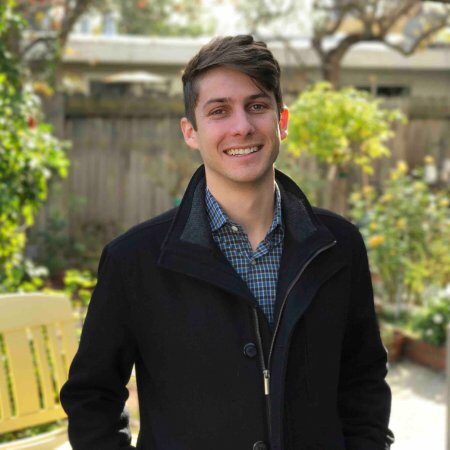

About Me
Originally from San Clemente, CA, I now live in San Francisco. Graduated from UC Berkeley with a degree in Anthopology in 2011. Currently working as a QA Engineer for Spruce Finance, where I have worked for more than 4 years.
My passions include: spending time with my girlfriend, playing xbox with my brothers, playing with my nieces and nephews, and playing guitar and the ukulele. I am passionate about music, with my favorite styles being indie pop, indie rock, the British Invasion, and a million guilty pleasure songs from the past 60 years.
When I'm not in San Francisco, you could probably find me in Palo Alto with my girlfriend. If not Palo Alto, then I'm with my family in Santa Cruz or San Clemente. My family is spread out over California, and I spend a lot of my time visiting them.